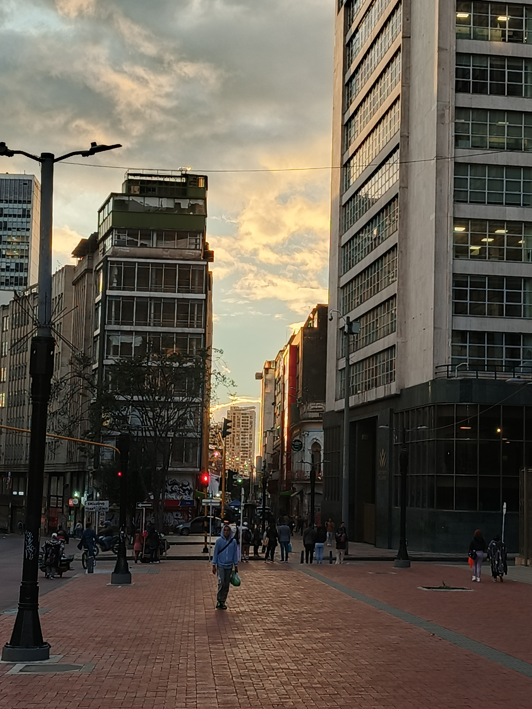
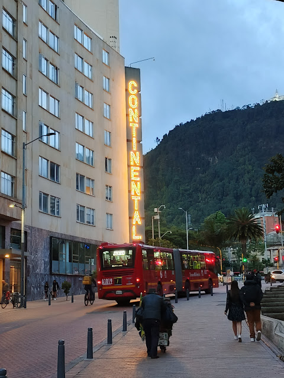
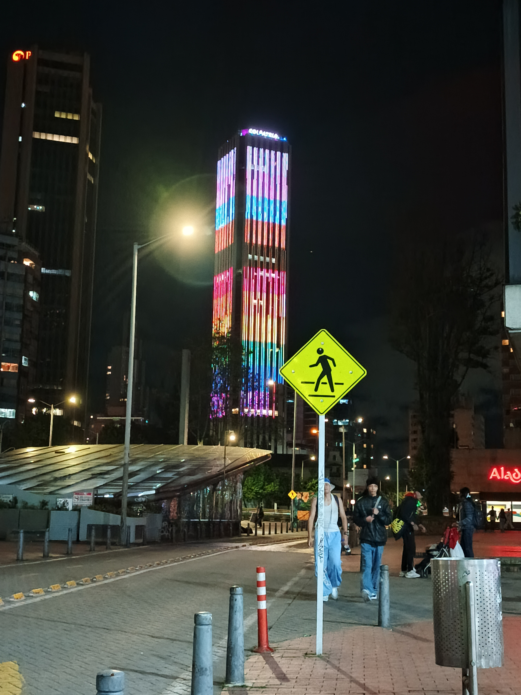
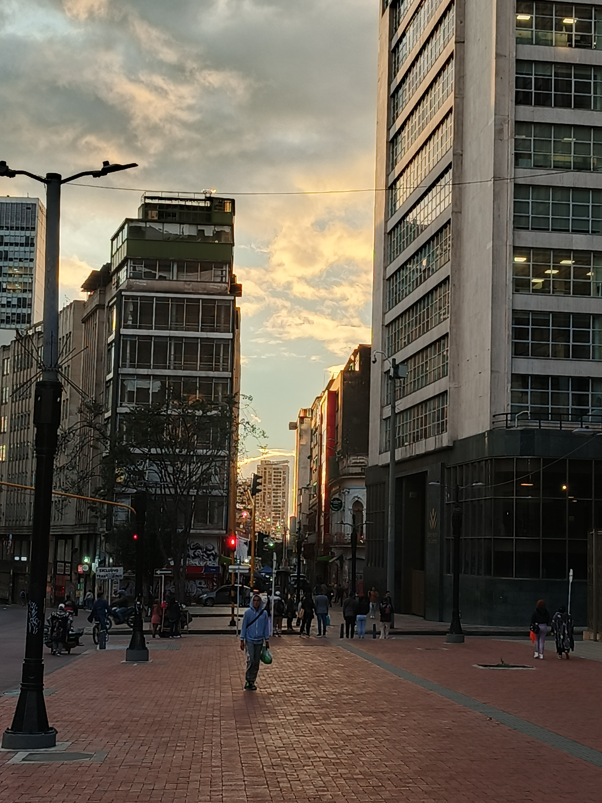
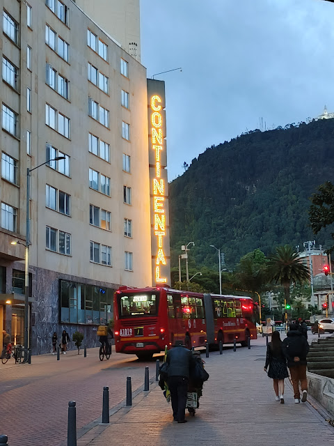
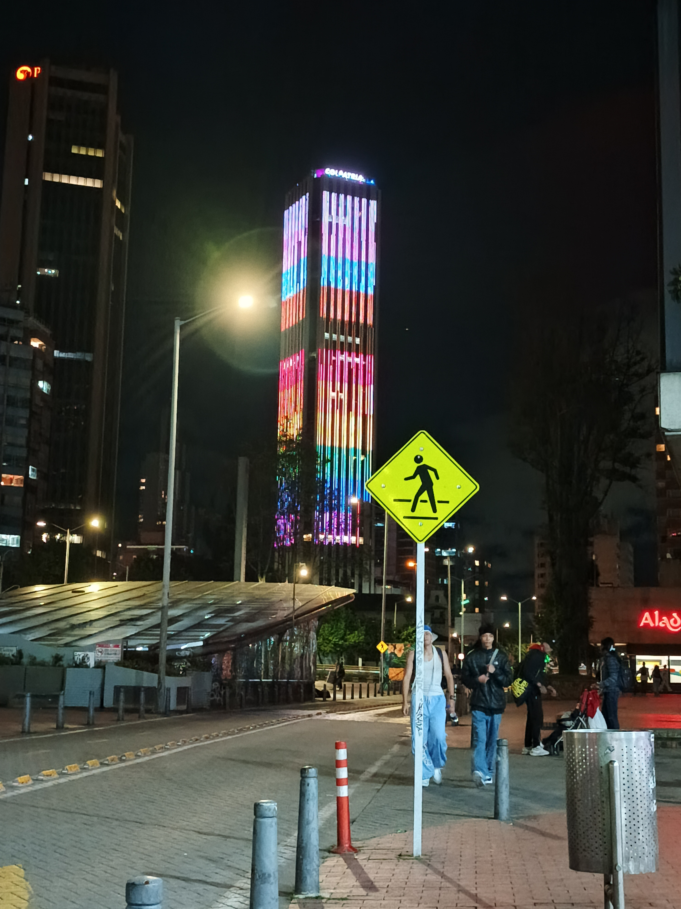
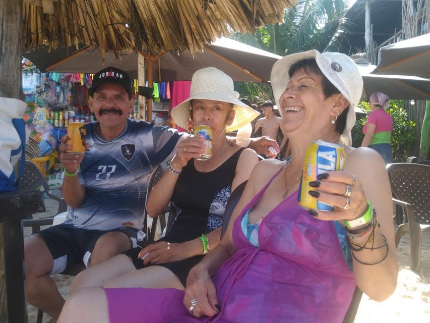
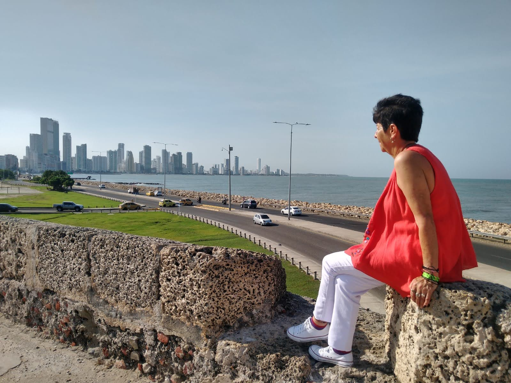
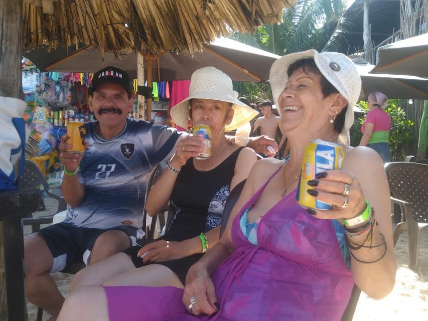
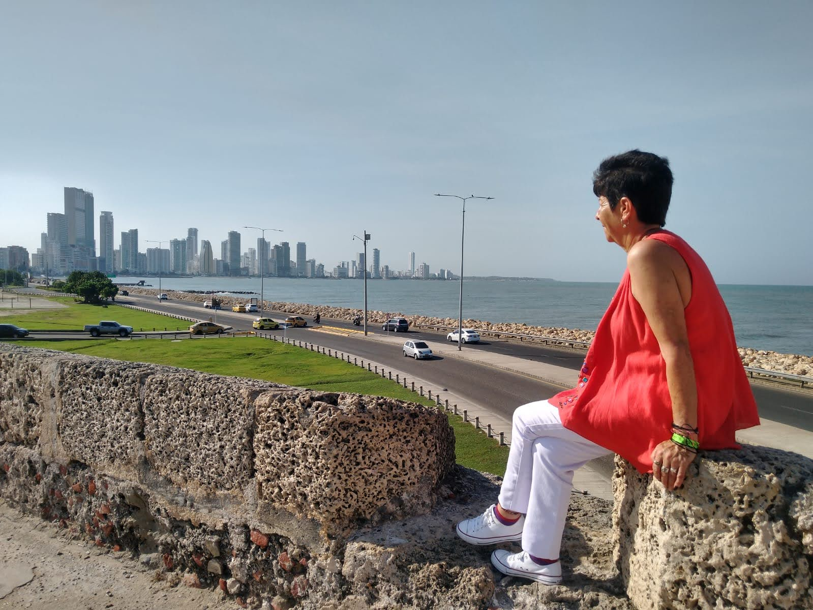

PRESENTACIÓN DE PERSONAJE

JOHAN FERNÁNDEZ
Buen día, mi nombre es Johan Andrey Fernández Quevedo, tengo 19 años, en unas semanas cumplo 20 años, realizo esta pagina web para mediados de julio y cumplo años a finales de julio, creé esta pagina web para hablar un poco sobre mi, lo que me gusta, lo que quiero hacer y también lo que ya he hecho.
Me considero una persona bastante energíca, amigable y muy buena gente, me gusta mucho el contar historias ya sea en formato de audiovisual, escrita o dibujada, realmente me gustan las historias interesantes sin tener la necesidad de dar un mensaje que revolucione lo que nosotros podamos pensar, lo que quiero es crear personajes que puedan cautivar con sus historias.

Quiero contarles acerca de mis proyectos, pero vamos de a pocos.
Vivo en Bogotá Colombia, aquí he vivido toda mi vida, me gustan los deportes mas específicamente el voleybol y el ajedrez, no me considero el mejor en ninguno pero me gusta ponerme a prueba con rivales fuertes, me gusta mucho la fotografía especialmente las fotografías de paisajes y retratos menos "conservadores" por decirlo de alguna forma, me gusta capturar momentos únicos, gestos, risas e incluso acciones, tomo la fotografía como forma de expresarme, a continuación les muestro algunas fotos que me gustaron.
No me quedo simplemente con las fotos, mi fuerte más grande es el audiovisual, me encanta poder contar historias por medio de personajes llamativos y extravagantes, no he tenido el palcer de trabajar en muchos proyectos pero me he gozado todos y cada uno cada vez que puedo.
Aún no sé programar un video en una pagina web, de no ser así les mostraría algunos de mis trabajos, en su defecto quiero hablarles de un proyecto personal que tengo.
PRESENTACIÓN DE HISTORIA
"EL HOMBRE BASURA"
La premisa de mi historia se basa en un ser con los poderes de dios, el cual con todo este poder decide actuar de forma imparcial con la humanidad, intercediendo únicamente cuando el balance entre el bien y el mal se va hacía uno de los lados, este ente es conocido en este mundo como el Hombre Basura porque la gente lo percibe como un héroe irreverente que solo actua cuando quiere, con mediocridad y sin involucrarse lo suficiente como los demás héroes de este mundo.
El hombre basura es el eje central de mi historia, por eso lleva su nombre, sin embargo, el no es el protagonista de mi historia, lo contemple al inicio cuando lo idée y creé su historia, entonces me parecio que tener como protagonista al ser mas poderoso de todos era un poco contraproducente, ya que al momento de ponerlo a pelear o a tratar con situaciones difíciles este se libraría de estas muy rápido, por lo que escogí a "none" para ser el protagonista.
None que en español significa: "nada o nadie" fue uno de los primeros personajes que creé despues del Hombre Basura, este estaba pensado para ser un fan, el cual simplemente quería ser un héroe como el Hombre Basura; cambié esta historia cuando decidí que el Hombre Basura no sería un héroe común y corriente, y entendí porque None era el candidato perfecto para ser protagonista.
None es un muchacho atlético que vive en una zona complicada de su cidudad manejada por algunas mafias extrañas el cual por azares del destino presencia al Hombre Basura en una ocasión, le investiga y es la primera persona en entender el patrón de no interceder más allá de la neutralidad, None lo denomina como una fuerza de la naturaleza e inspirado por esta muestra extraña de poder decide ser un héroe.
Así como batman tiene a robin, yo quería que el Hombre Basura tuviera un compañero, uno cómico pero fuerte que generé un contraste con su neutraldiad; None no podía cumplir este rol porque el debía ser alguien más terrenal, más humano; antes de None y luego de el Hombre Basura creé a Basurin, el compañero perfecto para una fuerza de la naturaleza.
Basurin es un experimento que resulto ser mas destructivo de lo previsto, es un cyborg virtualmente indestructible que se puede dividir en 5 "clones" y disparar rayos por sus manos, al ser un cyborg controlable iba a representar un desbalance en la maldad del mundo por lo cual el Hombre Basura intercedio volviendolo un ser consciente, un pequeño ser con un gran poder que domina a la perfección, pero quien no tiene interés en nada en particular más que el Hombre Basura, Basurin sigue al Hombre Basura como un perro a su amo, él genera un balance en el Hombre Basura, según palabras de None, donde hay una fuerza de la naturaleza hay también un gran caos que le acompaña.
 





 


